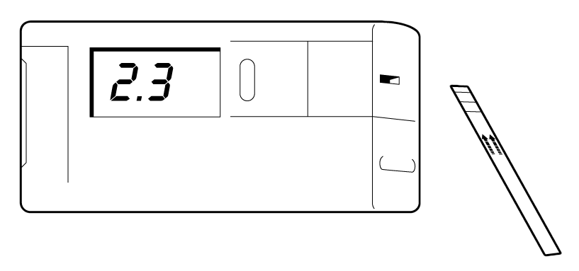

Ganda glýukozanyň möçberini birnäçe minudyň dowamynda çaganyň kürsüsiniň ýanynda ekspress-testleriň (Dekstrostiks) kömegi bilen anyklamaklyk bolar. Dürli öndürijileriň testleri bir-birinden tapawutlanýar, şol sebäpli testi ulanmazdan ozal onuň görkezmelerini okamaklyk örän wajypdyr.
Adaty bir damja gany reagent çalnan çyzyga ýerleşdirýärler we birnäçe wagta 30 sekuntdan 1 min aralyga, testiň görkezmesine görä goýýarlar. Soňra gany çyzykdan aýyrýarlar we belli bir wagtdan soň (mysal üçin 1 min) reagentiň reňkiniň üýtgeýşine baha berýärler.
Munuň üçin gapda bar bolan reňkler bilen alnan jogabyň reňkini deňeşdirýarler Bu hem, has takyk möçberini anyklamaklyga mümkinçilik bermesede, ganda glýukozanyň takmynan möçberini anyklamaklyga mümkinçilik berýar, mysal üçin 2-den 5 mmol/l.
Käbir testleriň düzümine sanalýan elektron enjamy ýerleşdirilen bolýar. Onuň içine gany süpürilen çyzygy ýerleşdirýärler we has takyk möçberleri alyp bolýar.